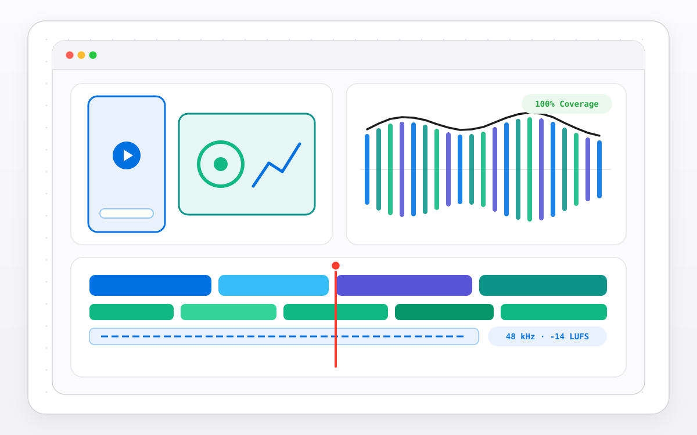

AGY × Codex Video Studio
A programmatic video production and DSP audio pipeline combining ASR silence/retake trimming, word-timed SRT/WebVTT caption layout, 5-dimension viral segment scoring, 48 kHz stereo PCM soundtrack synthesis and deterministic 1080×1920 HyperFrames/FFmpeg rendering.
- Period
- November 2026
- Release
- v0.2.0 (Public source)
- Work type
- Independent open-source project
- Development
- AI-assisted, with verification
What I built
A Python and HTML/CSS/GSAP/Canvas programmatic video production pipeline orchestrated across Antigravity (agy) and OpenAI Codex (codex). The backend package (src/agy_codex_studio/) implements a pure-Python 48 kHz 16-bit stereo PCM soundtrack synthesizer (soundtrack_synth.py), word-level ASR silence/filler/retake trimmer (ghost_trimmer.py), safe-area SRT/WebVTT caption layout engine (caption_engine.py), 5-dimension segment scorer with natural cut snapping (shorts_scorer.py), and an FFmpeg/ffprobe verification bridge (ffmpeg_bridge.py).
Developed with AI coding assistance. The repository includes four rendered H.264/AAC MP4 showcases (36.0s 1080×1920 SignalProof × ENVIID, 24.0s 1080×1920 Quad Engineering Showcase, and two 24.0s 1920×1080 hackathon demos), reproduction CLI commands and full test suites.
What was checked
Verified with 200 passing pytest tests achieving 100.00% line coverage across all 10 Python modules (1,889 / 1,889 statements, 0 missed), a 2,500-case deterministic property-based fuzzer checking timestamp monotonicity and RIFF/WAVE PCM alignment, a zero-dependency AST mutation testing harness achieving a 96.88% mutation kill score (62 / 64 mutants killed), and SHA-256 contract integrity checks across all four rendered MP4 outputs.


Verification date: 8 November 2026 (commit f0b4532). Automated tests and mutation scores cover the included Python modules and deterministic synthetic fixtures.
What this demonstrates
Demonstrates programmatic video composition, deterministic PCM audio synthesis, word-timestamp transcript editing and AST mutation-tested Python packaging. Viral segment scores are heuristic text/cadence rankings and do not predict social-media audience retention. Rendered showcases present synthetic engineering scenarios rather than live hardware recordings.
All projects